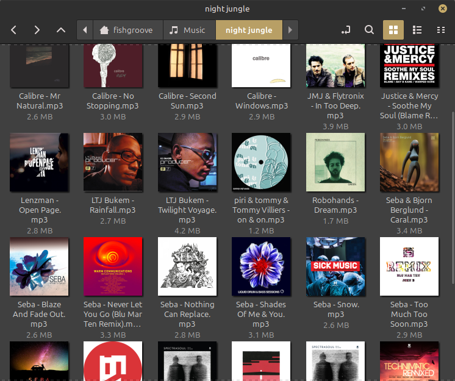

YouTube Music Playlist Downloader is a command-line Python utility for downloading
YouTube Music Playlists with ID3 tagging (title, artist, album, cover, track number
and release date), using Spotify as a resource for metadata.
Requirements
Spotify API
You are required to provide your own Spotify Client ID and Secret. To obtain these,
go to https://developer.spotify.com/.
Log in, go to the dashboard and click "Create App"
Fill in mandatory fields, ensure Redirect URIs has one URL
Tick "Web API", then click "I understand..." and Save
Go to your new app and click on "Settings"
This page will contain your Client ID and Secret.
Python setup
(Don't worry about this unless you're running this from source code)
Ensure the latest version of Python 3 is installed. To install required libraries,
clone the repository and run the following command:
pip install -r requirements.txt
FFmpeg
...is where the magic happens!
FFmpeg comes with the Windows version of the software. Nothing to worry about!
If you're using Linux or running from source, you'll need to download it yourself.
On Linux, install FFmpeg through your package manager (e.g. sudo apt
install ffmpeg.)
For Python, download FFmpeg from the official website https://ffmpeg.org/. You'll be
prompted to specify the path for the executable.
Installation
For Windows and Linux executables
On Windows, go to Releases, then download and run the install.exe file.
On Linux, go to Releases and download the .tar.gz file. Extract it, then run the
install.sh script as sudo.
~$ sudo sh ./install.sh
This will copy the executable to /usr/bin, and copy a shortcut to
/usr/share/applications.
Usage
How to get set up!
On first run, the program will ask you for your Spotify Client ID and Client Secret.
Provide these as prompted. You can also specify a custom directory for playlists to be
placed.
You can then paste the URL for a YouTube or YouTube Music playlist. Specify a target
bitrate in Kbps (e.g. 192, 320, etc.) and the program will do the rest.
For best quality (but larger file size), choose 320Kbps.
In the event that the program cannot find the song on Spotify, you'll be notified and
only the title and artist metadata will be saved.
The program will generate a .m3u file as it downloads songs, this can be imported into
most music players to create the playlist automatically.

Configuration
Where your settings are stored
Your settings (preferred download directory, API token, etc.) are saved in a location
depending on your OS.
If you run the program without going through first-time setup, you'll be unable to run
the program again. Delete the YTMusic-Playlist-Downloader directory in these locations,
and try again.
Uninstall
How to remove the program.. :(
Linux users can uninstall the program by running uninstall.sh as root.
Windows users can uninstall by navigating to the install location (typically
C:\Program Files\fridg3.org\YTMusic-Playlist-Downloader\uninstall.exe).
WARNING: Your configuration file will not be deleted on uninstall! For security,
you should navigate to your configuration folder and delete it manually.